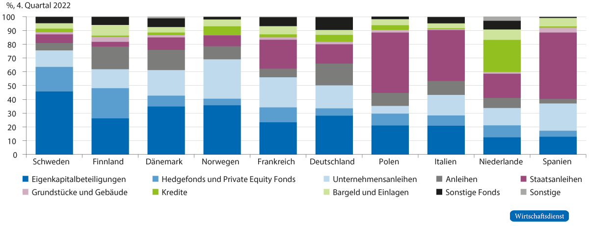

Dein Browser unterstützt CSS 3D-Transformationen nicht ausreichend. Die Präsentation wird deshalb als einfache Folienliste angezeigt – bitte nutze einen aktuellen Browser (Chrome, Edge, Firefox, Safari) für die volle Kamerafahrt.
INTERESSE
DARSTELLUNG
VERSICHERER
PENSIONSFONDS
ABSCHLUSS
Interesse
Kapitalmärkte stärken
Deutschland braucht mehr institutionelle Anleger
Kogler, Malmendier, Nöh & Schaffranka, Wirtschaftsdienst 8/2024 · Lukas Koser
Interesse
Gute Ideen brauchen Kapital
Seit COVID-19 wächst Deutschland besonders schwach
Debattiert: Investitionen, Anreize, Innovation
Kaum diskutiert: wer das finanziert
REALWIRTSCHAFT
FINANZWIRTSCHAFT
steht still
Wie mobilisieren wir in Deutschland Kapital für junge, innovative Unternehmen?
Interesse
Start-ups brauchen Kapitalmärkte, nicht Bankkredite
BANKKREDIT
verlangt Sicherheiten Start-ups: v. a. immaterielle Werte (Software, Patente, Know-how) passt kaum
KAPITALMARKT
Wagniskapital und IPO trägt Risiko gegen Beteiligung finanziert FuE und Wachstum
Am deutschen Kapitalmarkt fehlt genau diesen Segmenten Tiefe und Liquidität
Bates et al. (2009); Dell’Ariccia et al. (2021)
Darstellung
Zwei Anlegergruppen tragen den deutschen Kapitalmarkt
VERSICHERER
65 %
des BIP
Groß, aber konservativ angelegt
PENSIONSFONDS
< 10 %
des BIP
Sehr klein
davon nur 12 % in Aktien
Institutionelle Anleger in Deutschland, 2022
Problem: Die einen legen zu vorsichtig an, die anderen sind zu klein
Darstellung · Versicherer
Deutsche Versicherer: groß, aber konservativ angelegt
Deutschland: rund ⅓ Eigenkapital über 40 % Anleihen

abb1.png nicht gefunden
Abbildung 1 aus Kogler et al. (2024); Daten: EIOPA (CC BY 4.0)
Darstellung · Versicherer
Die Garantie erzwingt Anleihen
KLASSISCHE LEBENSVERSICHERUNG
garantierte Rendite plus Überschuss Versicherer trägt das Risiko Folge: Anleihen 10–25 %
fondsgebundene Policen · Deutschland, Italien, Frankreich
FONDSGEBUNDENE VERSICHERUNG
keine Garantie Versicherte tragen das Risiko mehr Aktien möglich > 60 %
fondsgebundene Policen · Schweden, Finnland
In 30 EWR-Ländern: Je mehr Policen ohne Garantie, desto mehr riskante Anlagen
Kennzahl: Anteil fondsgebundener Policen an den Verbindlichkeiten der Versicherer
Darstellung · Pensionsfonds
Deutsche Pensionsfonds: winzig im Vergleich
A · Vermögen, % des BIP
0 50 100 150
Niederlande, Schweiz, Schweden
knapp 100–150 %
B · Davon in Aktien, %
0 10 20 30 40 50
Niederlande, Schweiz, Schweden
25–50 %
Selbst Frankreich, Italien, Spanien mit ähnlich kleinen Fonds legen deutlich mehr in Aktien an
OECD, 2022
Darstellung · Pensionsfonds
Ursache: das Umlagesystem
UMLAGE · Deutschland
Beiträge der Erwerbstätigen
Renten von heute
Kaum Kapitalbildung
KAPITALDECKUNG · z. B. Schweden, Schweiz, Dänemark
Beiträge
Pensionsfonds
Unternehmen und Kapitalmarkt
Renten von morgen
Kapital arbeitet in der Wirtschaft
Darstellung · Pensionsfonds
Größere Pensionsfonds bringen mehr als Kapital
1
Produktivität
Pensionsfonds-Investitionen steigern Produktivität und Innovation (Dänemark)
Pozzoli et al. (2022)
2
Governance
Firmen, die CalPERS-Vorschlägen folgten, gewannen an Marktwert; ähnlich in Schweden
Smith (1996); Giannetti & Laeven (2009)
3
Altersvorsorge
Stabiler trotz Demografie; Ersatz für teure, renditeschwache Riester-Rente
SVR (2023); Nöh et al. (2024)
Darstellung · Pensionsfonds
USA: Regulierung öffnet den Markt
1978: Reform der US-Rentenregeln
Pensionsfonds dürfen zur Diversifikation riskanter anlegen
bis zu 10 %
pro Jahr
1970er
Ende 1980er
Gompers (1994); Gompers & Lerner (1999)
Darstellung
Zwei Hebel für den deutschen Kapitalmarkt
HEBEL 1 · STRUKTURELL
Kapitaldeckung aufbauen
ergänzende kapitalgedeckte Altersvorsorge schafft große Kapitalsammelstellen
HEBEL 2 · REGULATORISCH
Anlagegrenzen lockern
quantitative Grenzen und Hürden für riskantere Anlagen abbauen
Ziel: mehr Tiefe und Liquidität für Wagniskapital und Börsengänge in Deutschland
Abschluss
Fazit
Institutionelle Anleger sind der Schlüssel. In Deutschland sind sie zu klein und zu vorsichtig.
Euer Vorsorgegeld könnte die nächste Gründung finanzieren.
REALWIRTSCHAFT
FINANZWIRTSCHAFT
ZUR DISKUSSION Kapitaldeckung verpflichtend machen oder nur Anlagegrenzen lockern?
Backup
Quellen
ARTIKEL Kogler, Malmendier, Nöh & Schaffranka (2024), Kapitalmärkte stärken: Deutschland braucht mehr institutionelle Anleger. Wirtschaftsdienst 104(8), 539–542. DOI 10.2478/wd-2024-0141
DATEN EIOPA; OECD
LITERATUR Bates et al. (2009); Dell’Ariccia et al. (2021); Pozzoli et al. (2022); Smith (1996); Giannetti & Laeven (2009); Gompers (1994); Gompers & Lerner (1999); SVR (2023); Nöh, Schaffranka & Werding (2024)